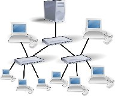

3.2.- Estrella.
La topología en estrella conecta todos los ordenadores a un nodo central, que puede ser: un router, un conmutador o switch, o, un concentrador o hub. Las redes de área local modernas basadas en el estándar IEEE 802.3 utilizan esta topología.
El equipo de interconexión central canaliza toda la información y por él pasan todos los paquetes de usuarios, este nodo central realizará funciones de distribución, conmutación y control. Es importante que este nodo siempre esté activo, ya que si falla toda la red queda sin servicio.
Entre las ventajas de utilizar esta topología tenemos que esta topología es tolerante a fallos ya que si un ordenador se desconecta no perjudica a toda la red, además facilita la incorporación de nuevos ordenadores a la red siempre que el nodo central tenga conexiones, y permite prevenir conflictos de uso.
Un esquema de la topología es:
Un ampliación de la topología en estrella es la estrella extendida o árbol donde las redes en estrella se conectan entre sí.

Cuando la estrella extendida tiene un elemento de donde se parte, hablaremos de la topología en estrella jerárquica, donde a partir de redes conectadas en estrella conseguimos una red más amplia y que mantiene una jerarquía de conexiones, ya que tenemos un nodo que es el inicio de la jerarquía. Este nodo suele ser un router y a partir de él se crea una red de área local que permite dar servicios a redes de área locales más pequeñas.
Este tipo de topologías es muy típica en redes de área local donde el principio de la jerarquía será el router que conecta a Internet, usualmente el que nos pone la compañía de telecomunicaciones, y el resto son los switch que dan servicio a diferentes aulas, salas de ordenadores, despachos, etc.
Un esquema de la topología jerárquica es:
Esta topología tiene la ventaja de que a partir de una única conexión a Internet, por ejemplo, podemos dar servicio a varias redes o subredes locales, con lo que ahorramos costes. Su principal desventaja está precisamente en la jerarquía, si el equipo de interconexión de mayor jerarquía falla, la red ya no presta los servicios para los cuales fue diseñada.